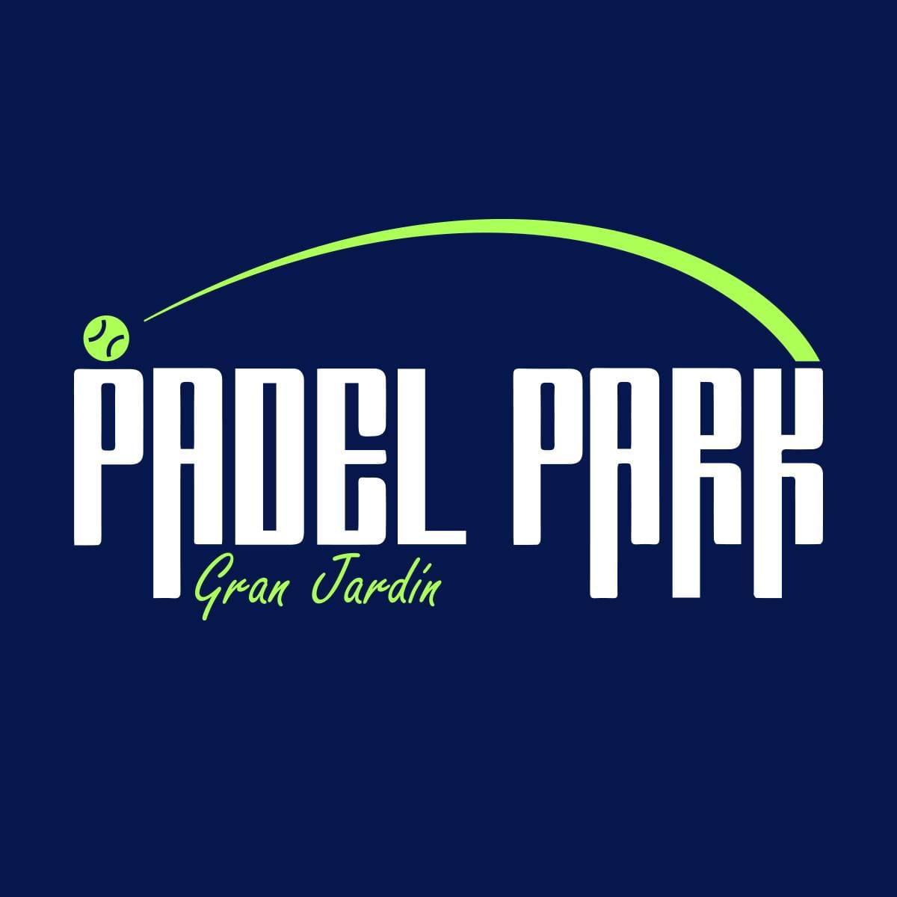

Panel de Recepción
Padel Park Gran Jardín
El panel de recepción se mudó al POS del club. Ahí se registran las visitas, se consultan los socios y se publican los avisos.
Abrir el POSapp-padel-park.vercel.app · entra con tu cuenta de personal
← Ir a la página de socios